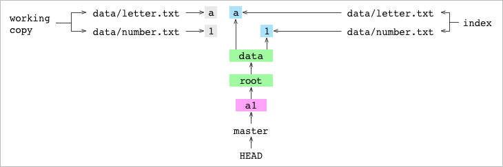

git由内而外
本篇文章旨在解释git如何工作。阅读本篇文章假定你已经足够熟悉git，能够使用它来对你的项目做版本控制。
本文专注于支撑git的图形结构以及它们的属性如何决定git的行为。着眼于基础，你的思考模型将搭建于事实真相之上，而不是使用git的API过程中推导出的种种假设。这种更加准确的模型能让你更好地理解git做了什么，正在做什么以及将要做什么。
文章以运行在单一项目上的一系列git命令组成。其中，会穿插着关于git所依托建立的图形数据的结构的观察结果。这些结果演示了图形结果的某一个属性以及这个属性会产生怎样的行为。
如果你想在读完本文后更进一步了解git，你可以查看我用javascript实现的git的带有大量注释的源码。
新建一个项目
|
|
这个用户新建了一个alpha文件夹，用于表示他的项目。
|
|
然后他进入到了alpha文件夹并且新建了一个data文件夹。然后，在这文件夹里他新建了一个叫做letter.txt的文件，这个文件包含文件a。现在alpha文件夹结构看起来是这样的：
|
|
初始化git仓库
|
|
git init将当前文件夹初始化为一个git仓库。为此，它新建了一个.git文件夹并往里写了一些文件。这些文件定义了关于git配置以及项目历史的所有东西。它们都是普通的文件，并没有什么神奇的。用户可以通过一个文本编辑器或者shell来读取或者编辑它们。也就是说：用户读取和编辑项目的历史可以与操纵他们的项目文件一样容易。
现在alpha文件夹看起来是这样的：
|
|
.git文件夹以及它的全部内容都是属于git的，除此之外的所有其他文件被归类为当前工作副本，它们是属于用户的。
添加一些文件
|
|
用户可以对data/letter.txt执行git add命令。这有两个效果。
第一，git会在.git/objects/文件夹里面新建一个blob文件。
这个blob文件包含了data/letter.txt文件压缩后的内容。它的名字是通过哈希内容产生的。哈希一段文本意味着对它执行一个程序产生一段更小的唯一标识原文的文本。比如，git将a哈希为2e65efe2a145dda7ee51d1741299f848e5bf752e。哈希后的文本的前两个字符会用作objects库里的文件夹名字：.git/objects/2e/，其余的会用作承载添加文件内容的blob文件的名字：.git/objects/2e/65efe2a145dda7ee51d1741299f848e5bf752e。
注意这里仅仅是add一个文件git就会将其内容保存到objects目录下。即使用户将data/letter.txt文件从工作目录中删除了，其内容在git里也是安全的。
第二，git add会将该文件添加到索引(index)。索引(index)是指一个包含git要跟踪的每个文件的列表，它以文件.git/index的形式储存在git中。该文件的每一行代表一个文件以及这个文件在add那一刻内容的哈希值。下面是执行git add后的索引(index)的内容：
|
|
接着用户新建了一个文件data/number.txt，其内容是1234。
|
|
现在工作目录看起来是这样的：
|
|
然后add这个文件。
|
|
git add命令新建了一个存放data/number.txt文件内容的blob对象。接着为data/number.txt添加指向blob对象的索引条目。如下是第二次执行git add后索引(index)的内容：
|
|
注意尽管用户执行的命令是git add data，只有data文件夹下的文件在索引(index)里列出来了，而data文件夹本身并没单独列出来。
|
|
当用户最开始创建data/number.txt文件时，他们打算输入的是1，而不是1234。他们做了订正并且add了修改后的文件。这个命令用新的内容创建了新的blob对象，并且更新了data/number.txt的索引项以指向新的blob对象。
提交一个commit
|
|
用户新建了个commit a1。git输出了关于这个commit的一些信息，你很快就会知道这些信息的含义。
commit命令分为三步：创建树形结构表示项目被commit时的那个版本的内容，创建一个commit对象，将当前分支指向指向新的commit对象。
创建图形结构
git通过从索引(index)创建树形结构来记录项目的当前状态。这个树形结构记录项目每个文件的路径和内容。
树形结构有两种类型的对象组成：blob和tree。
blob在git add时就会存储下来，它们代表文件的内容。
tree会在新建一个commit时存储。一个tree代表工作副本的一个文件夹。
下面是记录了commit时data目录内容的tree对象：
|
|
第一行记录了还原data/letter.txt所需要的每个信息。第一部分代表文件的权限。第二部分表示这一条目的内容由一个blob表示，而不是一个tree。第三部分是blob对象的哈希值。第四部分表示文件的文件名。
第二行记录了data/number.txt文件的相同信息。
下面是项目的根目录alpha的tree对象：
|
|
这个tree对象里面仅有的一行内容指向data tree对象。
在上图中，root tree指向data tree。data tree指向data/letter.txt文件和data/number.txt文件的blob对象。
创建一个commit对象
git commit命令在创建完树形结构后会创建一个commit对象。这个commit对象不过是另一个位于.git/object的文本文件。
|
|
第一行内容指向一个树形结构。哈希值是表示工作副本根目录（即alpha文件夹）的tree对象的哈希值。最后一行是commit信息。
将当前分支指向新的commit
最后，commit命令将当前分支指向新的commit对象。
哪个是当前分支？git通过.git/HEAD这个HEAD文件查到：
|
|
这就是说HEAD指向master，因此master就是当前分支。
HEAD和master都是ref。一个ref是一个给git或者用户标识特定commit的标签。
表示master ref的文件还不存在，因为这是这个仓库的第一个commit。git新建.git/refs/heads/master文件，并将它的内容设置为commit对象的哈希值：
|
|
（如果你一边阅读，一边输入这些git命令，你的a1 commit的哈希值会和我的不一样。内容对象比如blob和tree总是哈希成同样的值。但是commit不会，因为它们还包含了日期以及作者名字。）
让我们将HEAD和master加到git图中：
HEAD指向了master，这和commit之前一样。但是master现在存在了并且指向了新的commit对象。
非首次commit
下面是a1 commit后的git图，包含了工作副本和索引(index)的内容。

TO BE CONTINUE…